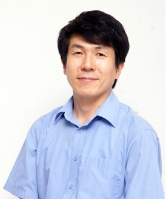

오세종(Oh, Sejong)
Education
- 1989 서강대학교 컴퓨터학, 학사
- 1991 서강대학교 컴퓨터학, 석사
- 2001 서강대학교 대학원 컴퓨터학, 박사
Experiences
- 단국대학교 소프트웨어융합대학 소프트웨어학과 교수(2016.3 - 현재)
- 단국대학교 일반대학원 데이터사이언스학과 교수(2016.3 - 현재)
- 단국대학교 대학원 나노바이오의과학과 부교수(2009.1- 2016.2
- 단국대학교 공학대학 컴퓨터과학과 조교수(2003.9-2008.12)
- 중국 연변과학기술대학교 방문교수 (2012.9 - 2013.8)
- 한국정보보호학회 논문지 편집위원 (2005.1 – 2006.12)
- 한국정보보호학회 협동이사 (2006.1 - 2007.12)
- George Mason University
Lab for Information Security Technology (LIST)
Post Doc Researcher (2001.9 - 2003.8)
- 대우정보시스템 근무 (1991.1 - 1997.1)